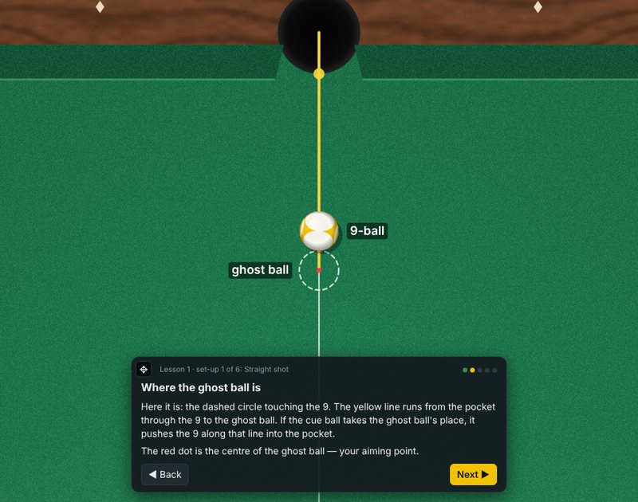
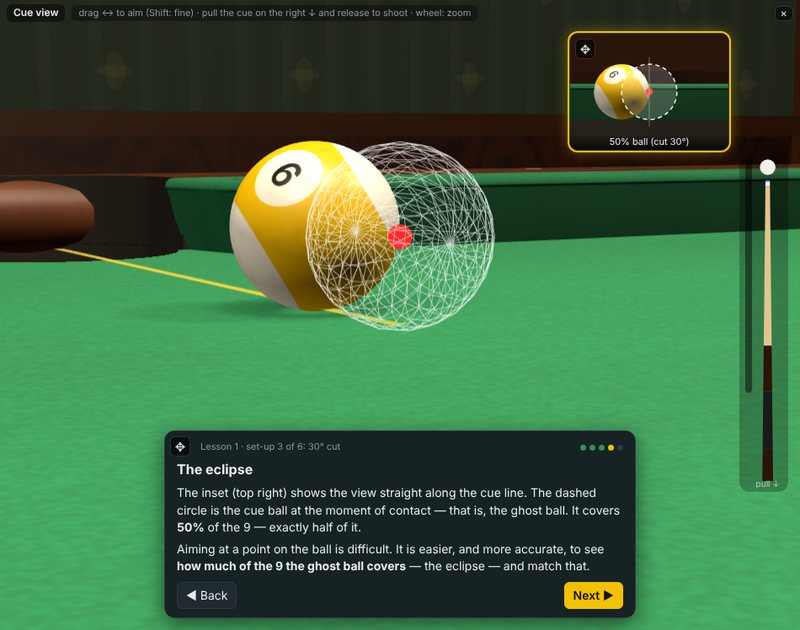
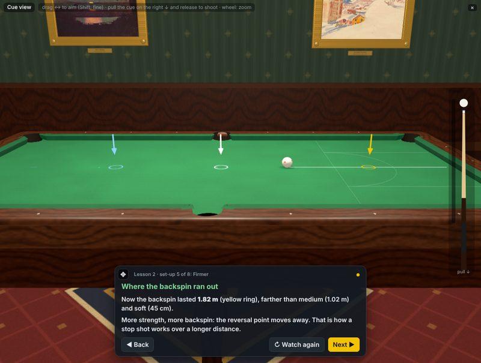
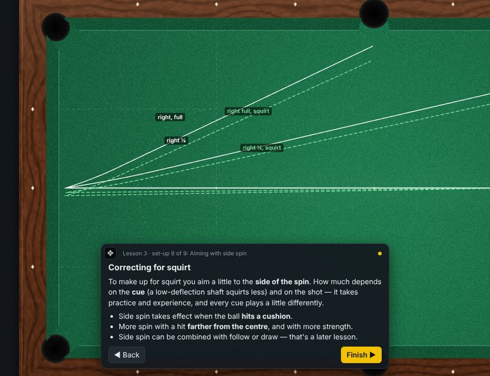
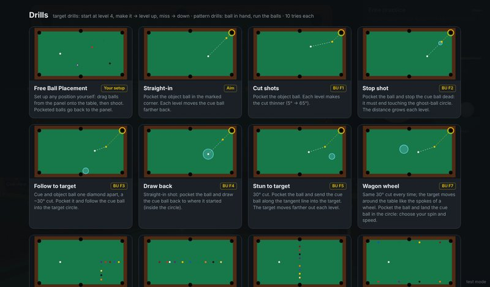
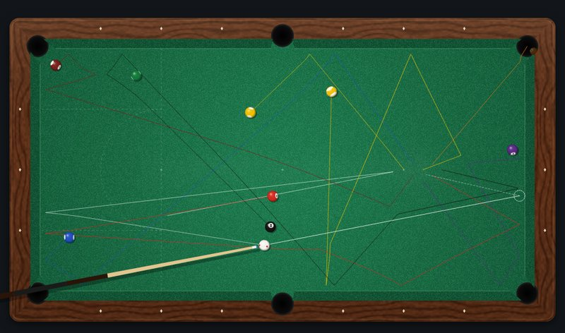
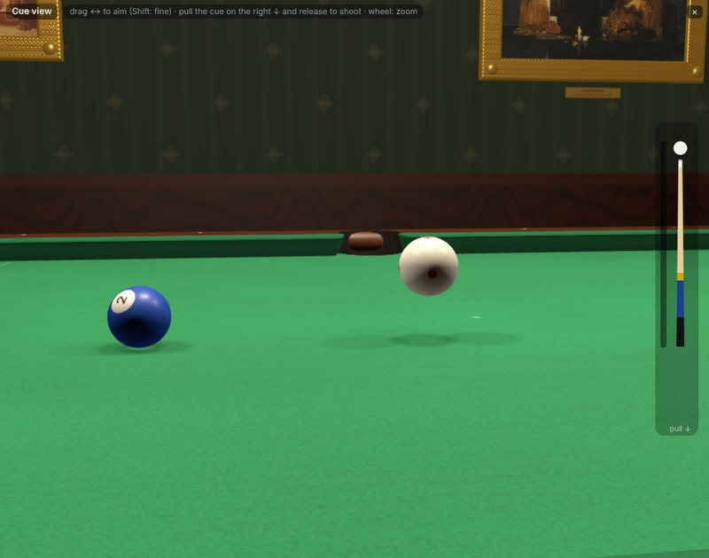
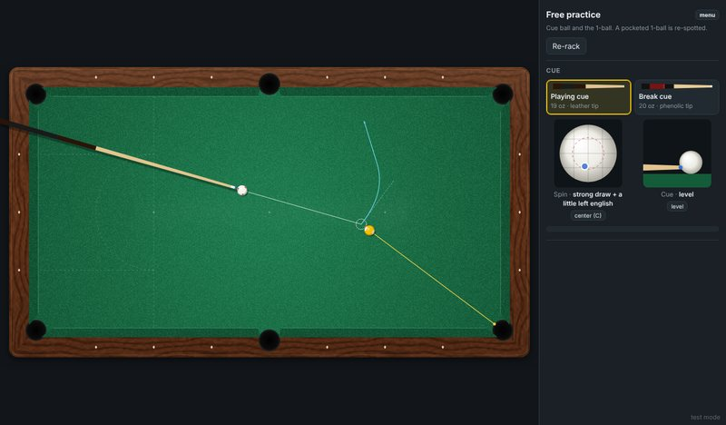
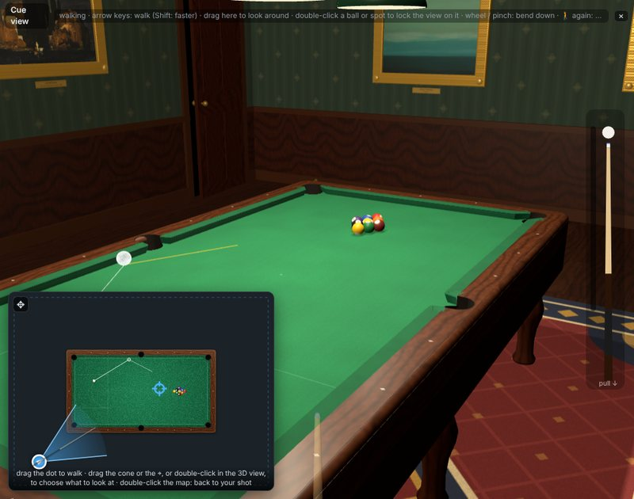

Real physics, not animationWhy Qball?
Most pool games animate the balls. Qball simulates them. Every ball carries a velocity and a spin, and everything you see follows from the physics of a real table.
Spin from the cue tip
Where the tip meets the cue ball, how hard, and how steep the cue is decide the ball's speed and all three components of its spin: follow, draw, stun and side spin (english) — and, with a raised cue, swerve and massé. Hit too far from the centre and you miscue.
Sliding, then rolling
A ball first slides over the cloth; friction turns the slide into roll (at 5/7 of the starting speed for a centre-ball hit). That is why a stop shot needs a sliding cue ball, and why a soft centre-ball hit follows.
Squirt
Side spin pushes the cue ball slightly off the line you aim (cue deflection), just as with a real shaft.
Throw
Friction between the balls bends the object ball's path a little: cut-induced throw (up to ~3.5° on a slow cut) and spin-induced throw, from a measured friction curve.
Real cushions
The rebound uses a research model of the cushion impact (Mathavan et al. 2010), with friction at the cushion and at the slate. Running and reverse english change the angle off the rail, and a hard hit "shortens" the angle.
Real pockets
The pocket jaws are modelled, so balls can rattle and hang. Pocketed balls drop in, roll around the pocket and stay there until you re-rack.
Real breaks
In a rack the balls touch, so all the contacts act at once. Qball solves them together with an elastic contact model, so the break spreads through the rack the way it does on a real table — and a frozen combination passes its speed on to the far ball.
Jump shots
A raised cue drives the cue ball into the slate, which throws it back up. A light jump cue gets out of the way and the ball flies over the ball in its path; a heavy cue held too steep pins it to the cloth. A ball can even fly off the table, drop to the floor and dent the wall.
Rail clearance
Near a cushion the cue has to clear the rail: you can't hit the cue ball as low, unless you raise the cue.
LearnLessons
The Lessons tab teaches one idea at a time. The balls are set up for you, only the thing the lesson is about can be changed, and a lesson card on the table explains each step while the views move to show it.




Aiming with the ghost ball
Where do you aim? At the ghost ball: the spot the cue ball has to take, touching the object ball on the line to the pocket. You see it from above, from behind the pocket and from the cue ball, in a straight shot and in 10°, 30° and 50° cuts. The aiming point moves from the centre of the object ball to its edge (30°, the half-ball hit) and into the air beside it (50°), and the eclipse view shows the easier way to aim: how much of the object ball the cue ball covers. Then you place the ghost ball yourself, aim and shoot, and Qball shows how far off you were.
Follow and draw
Where to hit the cue ball for follow and draw, named by the clock on the cue-ball picture. The aim is set; you choose the hitting point and pull the cue into a blue band that shows the right strength. Each draw shot is replayed in slow motion from the side, and a ring marks where the backspin runs out — the spot where a stop shot would happen. Softer, firmer and nearer the centre move that spot; a firm centre-ball hit makes the ball slide without spin.
Side spin
Side spin at 3 and 9 o'clock: it does nothing on the cloth and changes the angle off the cushion. Shots straight into the rail with a little and a lot of spin, to the right and to the left, replayed from above with their paths drawn. Then squirt is switched on, and you see the cue ball leave the aiming line — more the farther off-centre you hit.
The stop shot
The straight stop shot. Hit the stop-shot point and the cue ball stops dead; then hit lower and higher, softer and firmer, watch the slow-motion replay and say what happened (stop, draw or follow). Finally, with the cue ball 5 cm farther back, you choose the hitting point and the strength yourself and have to stop it in a small circle — and see that a firm centre-ball hit works too at short range.
More lessons are on the way.
PracticeDrills
The Drills tab has practice routines you can also set up on a real table — each card shows the layout.

Target drills
Inspired by the Billiard University exam: straight-in, cut shots, stop shot, follow, draw, stun to a target and the wagon wheel. You start at level 4; a make moves you up a level, a miss moves you down. After 10 shots you get a score out of 10.
Pattern drills
Ball in hand, then run the balls without missing — the L-drill, a long line-up, a cross line, balls frozen to the rails, the diamond grid, Dr. Dave's 3-ball drill, random layouts and "play the ghost". Ten tries each.
Free ball placement
Put any of the 15 balls anywhere and practise the shot that's been giving you trouble.
Play8-ball, 9-ball, 10-ball


- 9-ball and 10-ball with the main rules for solo practice: hit the lowest ball first, and after contact pocket a ball or send one to a rail. Fouls give ball in hand; pocketing the 9 (or the 10) wins the rack.
- 8-ball: the rack and the break (the full 8-ball rules are on the roadmap).
- Free practice: the cue ball and one object ball, re-spotted after each pot.
- Break cue: for the break, take the break cue from the cue rack (or press B). Its hard phenolic tip and an all-out stroke send the cue ball at up to ~13 m/s (about 30 mph), like a strong pro break. After the break you get your playing cue back.
- Jump cue: a ball in the way? Take the short jump cue (or press J). It starts raised to 50°: hit the cue ball firmly in the centre and it jumps over. Too soft, too steep or off centre and it stays on the cloth; too hard and it may fly off the table — a foul, ball in hand. The ball drops to the floor and rolls away; hit the wall hard and it leaves a dent (or cracks a painting's glass). ⚙ Settings → Repair the room fixes it all.
ControlsHow to play
Shooting (mouse)
| Aim | Move the mouse. Click to freeze the aim (so you can go to the panel), click again to release. ← → fine-tune (Shift coarse, Alt extra fine). Space locks the aim. |
| Shoot | Press on the table, drag back to pull the cue, let go. The farther you pull, the harder the shot. Esc cancels. |
| Spin | Click or drag on the cue-ball picture, or W A S D. C centres it. Outside the dashed ring you miscue. |
| Cue elevation | Drag the side-view picture, or E raise / Q lower. |
| Cue | Playing cue, break cue or jump cue in the cue rack; B break cue, J jump cue (again: back to the playing cue). |
| Ball in hand | Drag the cue ball where you want it. |
| View | 2D, Split or 3D in the top bar; V cycles. |
| Help | ? Help (or ?) lists all the controls in the game; 📖 Documentation opens this page. |


The 3D view
The 3D view is your eye down the cue, in a billiard room with a three-shade lamp and paintings on the walls.
- Aim: drag left or right (Shift for fine steps). Shoot: pull the little cue on the right side down and let go.
- Zoom: the mouse wheel takes you from down on the shot to standing up. Keep zooming out to start walking.
- After the shot the camera pulls back so you can watch the whole table, then returns to your shot. A jump shot is shown from the side, low over the cloth, in slow motion while the ball is in the air.
- Walk mode (🚶 Walk, or click the map): stand up and walk around the table.
- Walk with the arrow keys (Shift to go faster), or drag the blue dot on the map.
- Drag the 3D view to look around: left/right turns, up/down tilts.
- Double-click a ball, a spot on the table or a painting to lock your view on it; you keep facing it as you walk. Dragging the view unlocks it.
- Press walk again, double-click the map or pick up the cue to go back to your shot, aiming the way you face.
Aiming aids and settings
Open ⚙ Settings to switch each aid on or off (the choice is remembered):
- Aim line and ghost ball, the object ball's path to the pocket, the cue ball's path after the hit (shows draw, follow and stun), and the tangent line.
- Eclipse view: a small inset looking straight along the cue line, showing how much of the object ball the cue ball covers (e.g. 50% for a half-ball hit).
- A small red cross on the cue ball where the tip will hit (3D).
- Ball trails of the last shot, practice markings, realistic shadows, the after-shot overview and the slow-motion side view of jump shots.
Touch screens
On a tablet, drag on the table to aim — start on the cue ball for fine aiming — and shoot with the pull-down cue at the side. In the 3D view, drag to aim and pinch to zoom. With a mouse, the 👆 Touch mode button turns on the same controls.
Table size
Choose a 9 ft tournament table (the default), an 8 ft home table or a 7 ft bar box in the top bar. Pockets and balls keep their regulation sizes.
Test mode
For the curious (the small test mode link at the bottom right, or T): place balls exactly, shoot with exact numbers, change every physics setting, replay shots in slow motion, read a full report of each shot, and copy a shot to share it. How the physics works is described in the physics notes on GitHub.
No internet neededPlay offline
Qball is a plain web page: no install, no server, no internet connection needed once you have the files.
- Go to Qball on GitHub, click the green Code button and choose Download ZIP.
- Unzip the file anywhere on your computer.
- Open
index.htmlin any modern browser (Chrome, Edge, Firefox or Safari) — double-click it, or drag it onto a browser window. It opens this guide; click ▶ Play to go to the table. (play.htmltakes you straight to the table.)
Or, with git:
git clone https://github.com/afaisst/Qball.git cd Qball open play.html # the table (macOS); on Windows/Linux, double-click play.html open index.html # this guide
What's newVersion history
- 1.88 Nov 2026
Three new lessons: follow and draw, side spin, and the stop shot — with a clock on the cue-ball picture, a blue band on the cue for the strength to use, slow-motion replays from the side or from above, rings and paths that stay on the table to compare shots, questions to answer, and a shot you have to make to go on. They replace the old stop-shot lesson.
- 1.76 Nov 2026
Jump shots: the ball leaves the cloth when the cue is raised and hit firmly, flies, bounces when it lands, can hit balls on the way down and can jump off the table. A short, light jump cue, and a slow-motion side view of every jump in 3D. A ball that flies off the table is a foul (ball in hand); it falls to the floor, bounces off the walls — denting the panelling or cracking a painting's glass — and rolls away. Touch-friendly hints in touch mode. This guide, now the landing page (the game moved to
play.html). - 1.66 Nov 2026
Full walk mode: walk with the arrow keys, look around (and up and down) by dragging the 3D view; clicking the map just stands you up where you are. New README and screenshots.
- 1.56 Nov 2026
Realistic breaks: touching balls now collide all at once, with an elastic contact model, so the break spreads through the rack instead of sending one ball out of the back. Break cue and a cue rack.
- 1.42 Nov 2026
Lesson 1, aiming with the ghost ball: the first scripted lesson, with a lesson card, 2D zoom and 3D camera moves; you place the ghost ball yourself at the end.
- 1.329 Oct 2026
The billiard room: 7, 8 and 9 ft tables; real cushion profile and rounded rails; a three-shade lamp with soft ball shadows; paintings by Swiss artists and a door; Settings and Help pop-ups; new, more natural sounds; movable panels.
- 1.229 Oct 2026
Tablets and a better 3D view: touch controls and a phone/portrait layout; a reworked walk mode (drag the dot, turn with the view cone, keep looking at a spot); the eclipse view and the tip mark; cloth, wood and ball textures; the overview camera after the shot; balls that drop into the pockets and stay there; the Lessons tab with the stop shot; table legs, rug and walls.
- 1.028 Oct 2026
First version: the physics engine (sliding and rolling, spin, squirt, swerve and massé, throw, miscues, research-based cushions, rail clearance), 2D top view and 3D cue view (with walking around the table), 8-, 9- and 10-ball, target and pattern drills, free ball placement, and test mode.
Coming up
- 8-ball rules and a two-player mode (turns, fouls, groups, called shots)
- Break rules for 9- and 10-ball, push-out, the three-foul rule
- More lessons and drills, including jump shots
In the 3D roomThe paintings
- Public domain (via Wikimedia Commons): Ferdinand Hodler, Lake Thun with Symmetrical Reflection (1905), The Niesen (1910) and Lake Geneva from Chexbres (1905); Albert Anker, The Village School of 1848 (1896); Arnold Böcklin, Isle of the Dead (first version, 1880); Félix Vallotton, Sunset at Grasse (1918); Giovanni Giacometti, Maloja in Winter; Paul Klee, Senecio (1922).
- Rainer Oberhänsli, two Horizont paintings — © the artist, used with his permission (raineroberhaensli.ch). They may not be reused without the artist's permission.